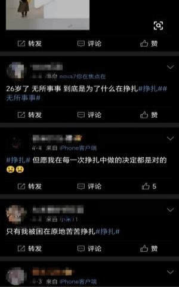
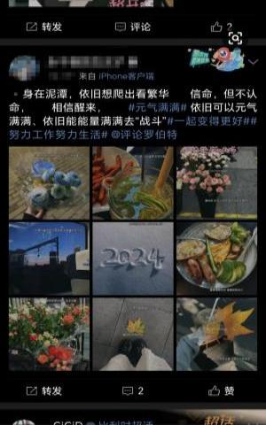
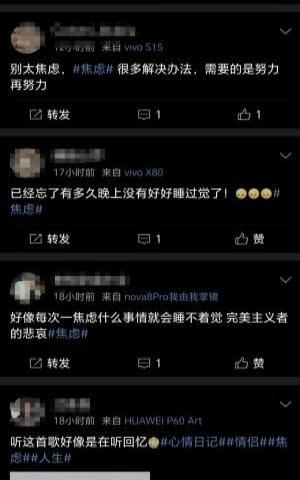
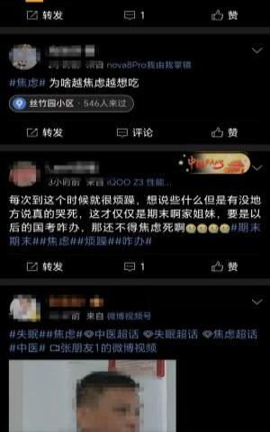
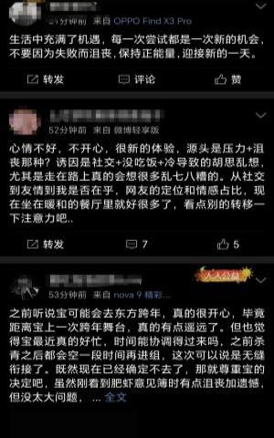
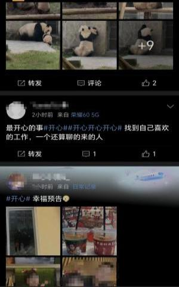
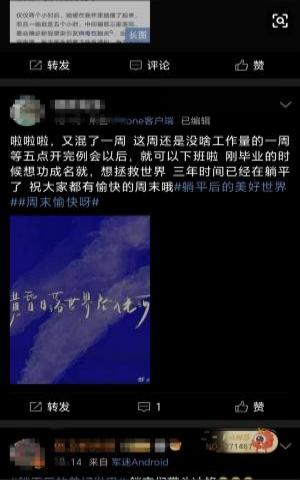
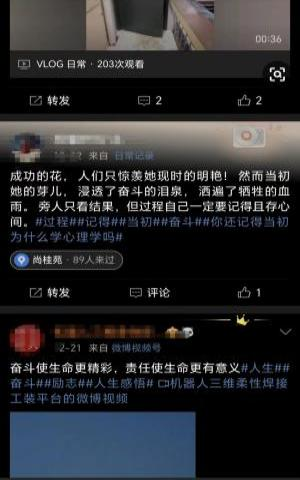
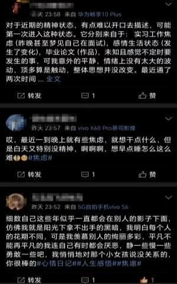

欢迎来到年轻人的心态空间站！
在这里，我们基于微博数据，深度挖掘并揭示当下年轻人的心态情感倾向。
通过地区差异、时代差异、性别因素等维度的多方位解析，我们得以感知到当今
年轻人的心态走向，看到年轻人内心世界的多元化和复杂性。同时展示引发其心
态的主要因素，为深入理解年轻人提供一把钥匙。
数据来源： |
微博 |
有效数据总量： |
161962条 |
数据处理： |
爬虫；数据清洗；大模型预测； |
数据处理工具： |
python的request和lxml库-爬虫； 大语言模型API-关键词提取； text RNN+LSTM模型-情感预测; |
数据覆盖范围： |
中国各省份；2010~2023年； |
本作品统计了2010~2023年微博言论中体现出的年轻人情感倾向（非常积极、积极、消极、非常消极），综合四个图表得出以下分析发现：
（1）在微博言论中，年轻人主流情感倾向为积极，但疫情前后消极情感占比显著升高；
（2）在上海、江苏等经济高度发达、生活压力大的地区，年轻人更容易产生消极情绪；而在贵州、天津等相对宽松的生活环境中，年轻人更容易
产生积极情绪；
（3）由于传统社会角色期待和压力应对策略的性别差异等原因，男性比女性更不易在公开言论中表达负面情绪；
（4）近些年在内卷的大环境下，“内卷”“加班”等事件深刻影响着年轻人的情绪，而“吃”和“回家”等缓解压力的事件更容易为年轻人带来
幸福感。
综合以上分析发现，地区的经济发展状况、生活氛围、时代背景、传统观念等因素始终深刻影响着年轻人的情感倾向，每个个体的情感与这个时
代息息相关。
但即使当下生存压力增大，年轻人在公开言论中的主流情感依然为积极，可见年轻人在面对困难和挑战时，依然保持了相对积极的心态。
这份作品也有其局限性：
（1）微博用户并不代表所有年轻人，这份报告的结果可能并不能全面反映年轻人的情感倾向。
（2）作品主要关注了微博上的公开表达，可能无法捕捉到年轻人更深层次、私人的情感状态。
（3）情感倾向的复杂性和多元性可能超出了单一的关键词和地区、时间、性别的分类所能描述的范围。
综上，本作品提供了一个观察年轻人情感倾向的重要视角，为理解年轻人的生活状态和情感世界提供了通道，也期待更加全面和深入的研究。